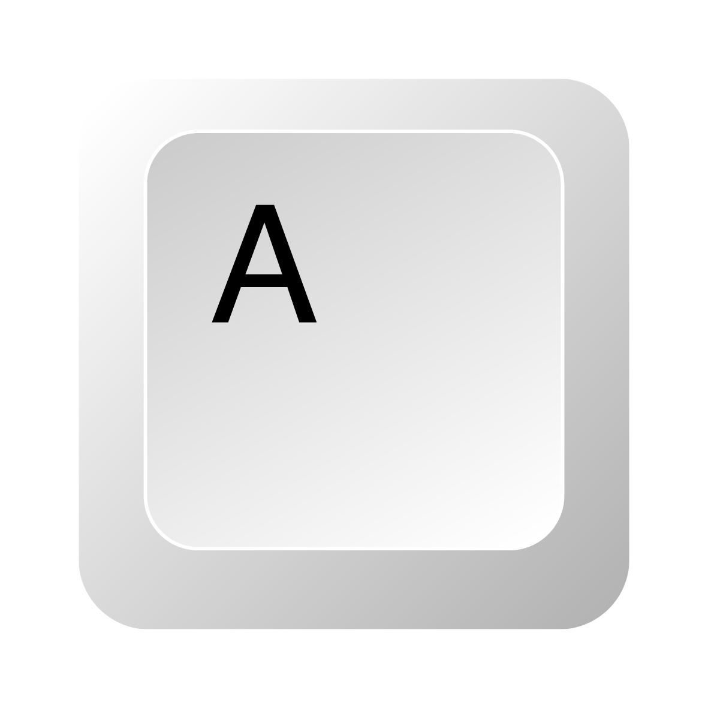

Jogador 1 (AWSD)
-  - Mover para a esquerda
- - Mover para a direita
- - Mover para cima
- - Mover para baixo
- - Chutar
Jogador 2 (Setas)
- - Mover para cima
- - Mover para baixo
- - Mover para a esquerda
- - Mover para a direita
- - Chutar
Objetivo do Jogo
O objetivo do FutMaster é marcar mais gols que o adversário antes do tempo definido, utilizando estratégias e habilidades para controlar seu personagem e aproveitar as oportunidades de chute.